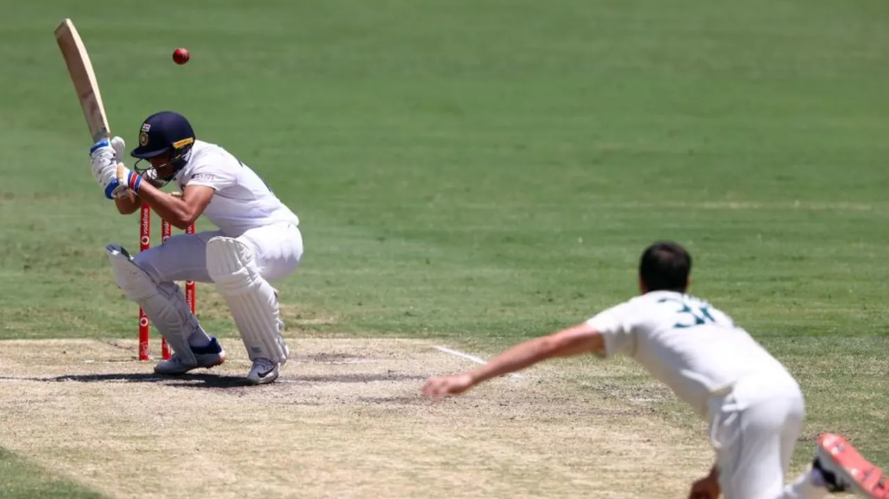

| Full members to play more international cricket in ICC's new FTP cycle |
|---|
|  |
| Despite the rapid and ongoing expansion of T20 leagues around the world, there is an increase in the amount of bilateral international cricket scheduled in the new ICC men's Future Tours Programme (FTP) for the next four years. This includes two Border-Gavaskar series - Test cricket's headline rivalry of the last decade or so - between Australia and India that will, for the first time in over 30 years, be contested over five Tests.
The ICC released the 2023-27 FTP on Wednesday, in which the 12 Full Members play a total of 777 international matches - 173 Tests, 281 ODIs and 323 T20Is - compared to the 694 games in the current cycle. Bangladesh play the most bilateral international games (150) in the new FTP, followed by West Indies (147), England (142), India (141), New Zealand (135), Australia (132), Sri Lanka (131), Pakistan (130), Afghanistan (123), South Africa (113), Ireland (110) and Zimbabwe (109). Australia men's FTP takeaways: BBL window, the Afghanistan question, home Tests in March PSL set to go head-to-head with IPL in 2025 In terms of T20Is, West Indies play the most bilateral matches (73) followed by India (61), Afghanistan (57), Bangladesh (57), New Zealand (57), Pakistan (56), Sri Lanka (54), England (51), Australia (49), Ireland (47), South Africa (46) and Zimbabwe (45). Bangladesh also play the most bilateral ODIs (59), followed by Sri Lanka (52), Ireland (51), England (48), West Indies (48), Pakistan (47), New Zealand (46), Afghanistan (45), Zimbabwe (44), Australia (43), India (42) and South Africa (39). In Test cricket, England play the most matches (43), followed by Australia (40), India (38), Bangladesh (34), New Zealand (32), South Africa (28), Pakistan (27), West Indies (26), Sri Lanka (25), Afghanistan (21), Zimbabwe (20), Ireland (12). The first five-Test Border-Gavaskar series will take place during the 2023-25 World Test Championship (WTC) cycle, when India tour Australia in the Australian summer of 2024-25. Australia then tour India during the 2025-2027 World Test Championship cycle for five Tests in January-February 2027. India also play two five-Test series against England - at home in early 2024 and away in 2025. As has been the case for the last few FTPs, there is no bilateral series between India and Pakistan. Tri-series between Full Members are also set to make a comeback, with Pakistan hosting New Zealand and South Africa in an ODI tri-series in February 2025, Zimbabwe hosting New Zealand and South Africa for T20Is in July 2025, and Pakistan hosting England and Sri Lanka for an ODI tri-series in October-November 2026. There is also an extended window for the IPL, during which very little international cricket has been scheduled, from the middle of March right through to the start of June every year between 2023 and 2027. England and Australia have also created windows in August and January, respectively, in their own international schedules, to allow their marquee white-ball players to participate in the Hundred and the BBL. Bangladesh has done likewise with a window for the BPL in January, during which it plays no international cricket in this FTP. In 2025, the PSL will become the first T20 league to overlap with the IPL because of Pakistan's packed international season. Starting November 2024, Pakistan have away tours of Australia, Zimbabwe, South Africa and New Zealand, before returning home for a tri-series in February 2025, followed by the ICC Champions Trophy in Pakistan that ends in March. The PSL will begin only after the Champions Trophy ends, leading to a clash with the IPL. There will also be an ICC men's event every year of this cycle - the first time that has happened since the 2011-2015 FTP - starting with the 2023 ODI World Cup in India, the 2024 T20 World Cup in the West Indies and USA, the 2025 Champions Trophy in Pakistan, the 2026 T20 World Cup in India and Sri Lanka, and the 2027 ODI World Cup in South Africa, Zimbabwe and Namibia. |